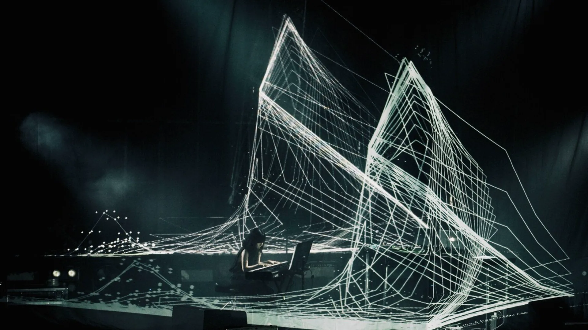
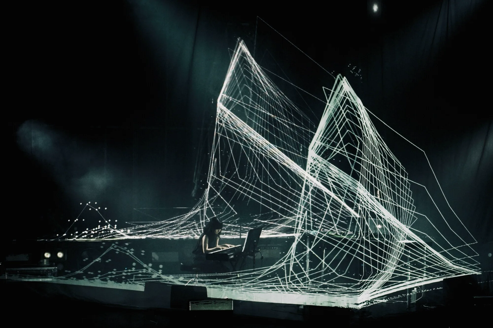
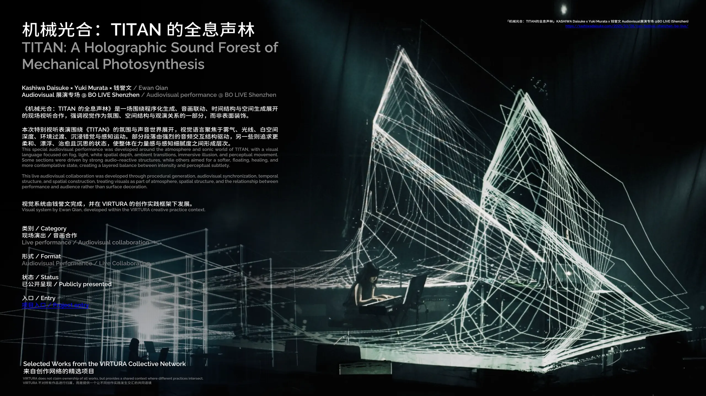
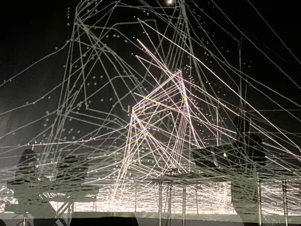

利用纱幕、雾气与前后层级制造并非贴在平面上的视觉深度，让光线路径进入真实空间。

Live Audiovisual Collaboration · 2025
柏大辅《TITAN》
深圳 BO LIVE 专场
围绕 KASHIWA Daisuke《TITAN》展开的现场音画项目。钱誉文 / Ewan Qian 负责现场视觉制作，将纱幕、雾气、空间纵深与声音触发的运动结构组织为统一的舞台视觉系统。
Project Facts
公开页面只保留已完成、可独立说明项目质量的内容。测试片段、过程日志、工作量记录和仍在迭代的技术笔记不进入作品展示层。
Music / Composition
柏大辅 / KASHIWA Daisuke
Piano / Live Music
村田有希 / Yuki Murata
Live Visual Production
钱誉文 / Ewan Qian
Date
2025.10.21
Venue
BO LIVE 前海店 · 深圳
Visual Scope
全息纱幕 / 裸眼 3D / 雾气纵深 / 音画互动视觉
Live Images
现场结果优先于过程解释。画面集中呈现纱幕层次、白空间深度、雾气中的光线路径与舞台错觉。



Visual System
视觉语言并不依赖单个“效果”，而是围绕空间层次、时间结构和音乐强弱关系建立连续系统。
不同段落根据音乐结构在强烈节奏触发与缓慢漂浮状态之间切换，维持两小时级内容的连续性。
视觉与现场音乐、灯光、雾气和舞台结构共同工作，重点是整体感知而不是孤立的屏幕动画。
Credits & Documentation
仅保留公开可核验的核心署名与正式记录。
Music / CompositionKASHIWA Daisuke / 柏大辅
Piano / Live MusicYuki Murata / 村田有希
Live Visual ProductionEwan Qian / 钱誉文